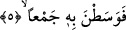
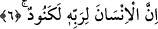

görünmezler. Buradan anlaşılıyor ki atların tırnaklarından çıkan ve gündüz görünmeyen
kıvılcımlar da gece meydana gelmektedir. Aman Allah’ım! Kur’ân’ın ihtivâ ettiği şu
incelikler ne kadar da hayranlık verici!
Sa‘dî Müftî Beydâvî Tefsiri üzerine yaptığı hâşiyelerde der ki: Atlar tozu dumana
katarlar, çünkü baskın esnâsında taktik gereği sağa, sola, öne arkaya giderler, bazen
hücûm edip bazen geri çekilirler, bazen kaçan düşmanı takip ederler, bazen de
üzerlerine gelen düşmana saldırırlar, bu sebeple ortalık toza dumana boğulur.
5. Derken orada bir topluluğun ta ortasına girenlere yemin ederim ki
Âyetin mânâsı “bi” harf-i cerrinin anlamına göre yâ, “o vakitte düşmanın ortasına
dalanlara” veya “tozu dumana katarak düşman topluluğunun ortasına dalanlara...”
şeklindedir.
Âyetlerin başındaki “fâ” harfleri, baştan beri bahsedilen hâdiselerin bir tertîb üzere
birbirine bağlı olduğuna delâlet etmektedir. Çünkü atların düşman toplulukları içine
dalması, tozu dumana katmalarına; toz duman, sabah vakti baskın yapmalarına; baskın,
atların tırnaklarının kıvılcım çıkarmasına, o da atların koşmasına bağlıdır ve bunlar
birbirini takip etmektedir.
6. İnsan, Rabbine karşı pek nankördür.
Bu âyet, yukardan beri yapılan yeminlerin cevabıdır. Bir başka ifâde ile üzerine yemin
edilerek gerçek olduğu vurgulanan vâkıadır.
“Kenûd” kelimesinin masdarı olan “künûd”, nîmete nankörlük etmek demektir.
“Kenûd” ise, çok nankör demektir. Nitekim Kinde kabilesine bu ismin verilmesi bu
mânâdan dolayıdır. “Kinde”, Yemen’deki bir kabilenin atası olan Sevr b. Ufeyr’in
lakabıdır. Çünkü o babasının yaptığı iyiliklere nankörlük etmiş, ondan ayrılarak
dayılarının yanına gitmiştir.
Kelbî şöyle der: “el-Kenûd”; Kinde lehçesinde isyankâr, Benî Mâlik lehçesinde
cimri, Mudar ve Rabîa lehçelerinde de çok nankör demektir.
Bu âyet-i kerimedeki, “insan” kelimesinden maksad, insan cinsinin bazı ferdleridir.
Yâni insanların bir kısmı bilhassa Rabbinin nîmetine çok nankördürler.
“Li Rabbihî” ifâdesinin başındaki “lâm” harf-i cerri, kendisinden sonra gelen
“Kenûd” kelimesine bağlıdır. İnsanın bilhassa Rabbine karşı nankör olduğunu ifâde
etmek ve âyet fâsılalarının uyumuna riâyet etmek için bağlı olduğu kelimenin önüne